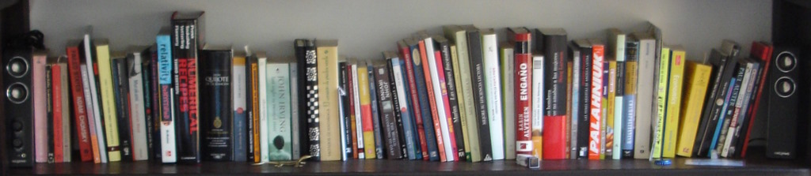

I am a Group Leader at the Max Planck Institute for Gravitational Physics (Albert Einstein Institute) in Potsdam (Germany), working at the interface between cosmology, gravitation and fundamental physics. Previously I was a Marie Sklodowska-Curie Global Fellow at the Berkeley Center for Cosmological Physics & IPhT Saclay, a Nordita Fellow and a postdoc at ITP Heidelberg. Since 2025 I am senior Co-Chair of the LISA Cosmology Working Group and a Lead in Euclid's Science Working Group for Gravitational Waves.
NEWS: My project GLOW "Gravitational Lensing of Waves" was awarded a 2025 ERC Consolidator Grant (AEI press release).
NEWS: Black Holes as Telescopes published in PRL as Editor’s Suggestion, (AEI Press Release).
NEWS: Our analysis of GW231123 as a potentially lensed and diffracted black hole merger is out (arXiv:2512.17631), see also the associated Cosmology Talk.
My project "With Einstein on crooked paths" is developing new methods to identify lensed gravitational waves and study the small-scale properties of dark matter.
▶ Introductory video on gravitational-wave lensing
My research encompasses four key predictions of Einstein's theory of General Relativity: cosmology (the dynamics and history of the Universe), gravitational waves (radiation in spacetime itself), black holes (compact objects with strong gravity) and gravitational lensing (the distortion of signals travelling through the Universe). I leverage these phenomena to explore astrophysics, dark matter, dark energy and gravity. For more details see:
My group develops the GLoW code for gravitational lensing in the wave-optics regime. I am also a main developer of the hi_class code, a fast and flexible tool to test cosmological gravity and dark-energy theories. In the past I worked on other software implementations to investigate cosmology and gravitation.
My earlier research is contained in my PhD dissertation "Probing the Foundations of the Standard Cosmological Model and summarized in my PhD defense presentation (shown below)
I love teaching and science communication with the general public (in Spanish, English or German).
Wrong Zuma? You might be looking for my sister Ana (number theorist in University of NSW) or my cousin Veronica (world food reporter in Canal Cocina).
Or my distant relative Miguel Antonio (liberal politician in the 18th century), or his brother "Uncle Tomás" (conservative general in that same period).
